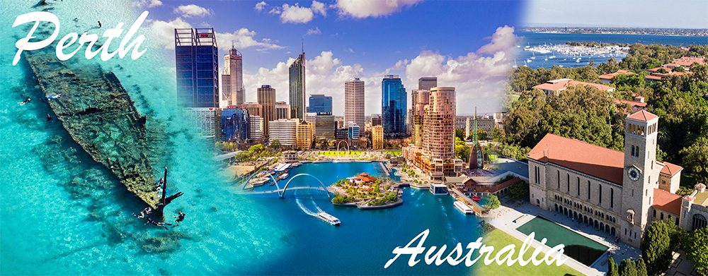

Perth & things to do

Perth sits on Whadjuk Noongar boodja, on the edge of the Indian Ocean and at the northern end of one of the planet's great biodiversity hotspots. It is also the stretch of coast that gave marine heatwave research its defining case study: the 2011 Ningaloo Niño, which pushed water temperatures up to 5 °C above average, killed kelp forests across hundreds of kilometres of reef and shifted whole communities poleward. Much of what you will be discussing at the symposium happened just offshore from the venue.
Everything below is grouped by how far it is from the University of Western Australia, because the useful question is usually not what kind of thing it is but whether it fits in a free afternoon, a spare Saturday, or a week tacked onto the trip. Use the filters to narrow by activity.
September in Western Australia
You are arriving at an unusually good time of year, and three things worth planning around happen to coincide with the symposium week.
Peak wildflower season
The south-west has around 12,000 plant species, most found nowhere else, and they flower in spring. The Everlasting Kings Park Festival runs across the symposium dates, ten minutes from campus, with more than 3,000 WA species on display and free guided walks and talks.
Humpbacks heading south
One of the largest humpback populations on Earth passes Perth on its way back to Antarctica, and from September that includes mothers with newborn calves moving slowly through sheltered water. Boats leave from Fremantle and Hillarys; morning departures are calmest.
Water is about 19–20 °C
Visibility is often excellent in spring, but this is not tropical water in September. Bring a 3 mm wetsuit if you plan to snorkel or dive, or hire one locally. Air temperatures sit around 13–23 °C, and spring can deliver a bright still morning and a squally afternoon on the same day.
Find something to do
Walk from the venue
under 30 minutes on footEnough for a long lunch break or the gap before a conference dinner.
-
Image slot
assets/img/perth/kings-park.jpg2 km · 25 min walk, 8 min driveKings Park & Botanic Garden
Four hundred hectares on an escarpment above the river, two thirds of it retained as bushland. The Botanic Garden holds over 3,000 WA species. Walk the Boodja Gnarning trail for Noongar plant use, or the Federation Walkway's glass bridge through the eucalypt canopy.
-
Image slot
assets/img/perth/matilda-bay.jpgOn the doorstep · 5 min walkMatilda Bay & the Swan River foreshore
The reserve runs along the river immediately below campus. Bottlenose dolphins use the estuary year-round and are regularly seen from the shore. The path continues for kilometres in both directions for a run or a borrowed bike.
-
Image slot
assets/img/perth/uwa.jpgThe venue itselfUWA campus & the Sunken Garden
Winthrop Hall and the limestone quadrangles are worth twenty minutes on their own, and the Sunken Garden is a quiet spot between sessions. The Indian Ocean Marine Research Centre, where much WA marine heatwave work is done, is on the same campus.
An afternoon
under an hour each wayDoable after the last session, or on a half day.
-
Image slot
assets/img/perth/mettams.jpg25 km north · 30 min driveMettams Pool & Marmion Marine Park
A limestone reef encloses a shallow lagoon at Mettams, making it the most forgiving snorkel on the Perth coast and good in most conditions. It sits inside Marmion Marine Park, WA's first, with seagrass meadows and reef platforms that appear in a lot of the temperate-reef literature.
-
Image slot
assets/img/perth/fremantle.jpg12 km south-west · 25 min drive or trainFremantle
The port city, and the best-preserved nineteenth-century streetscape in Australia. The WA Shipwrecks Museum holds the reconstructed stern of the Batavia, wrecked in 1629. Fremantle Prison is a World Heritage site. The markets run Friday to Sunday.
-
Image slot
assets/img/perth/boola-bardip.jpg7 km east · 20 minWA Museum Boola Bardip
Rebuilt and reopened in 2020, with strong natural history and Aboriginal history galleries. The name means "many stories" in Noongar. It is in the Perth Cultural Centre alongside the Art Gallery of WA, so the two make one afternoon.
-
Image slot
assets/img/perth/whales.jpgDeparts Fremantle or Hillarys · half dayWhale watching
September is the southbound humpback migration, including cows with calves. Operators run from Fremantle and Hillarys, mostly morning departures because afternoons pick up a sea breeze. Book ahead; the symposium week is in season.
-
Image slot
assets/img/perth/swan-valley.jpg25 km north-east · 35 min driveSwan Valley
WA's oldest wine region and the closest to a city of any Australian wine region. Chenin blanc and verdelho do well here. Easy to combine with Whiteman Park if you want to see a quokka without going to Rottnest.
A full day
1 to 3 hours each wayFor the weekend either side of the symposium.
-
Image slot
assets/img/perth/rottnest.jpgFerry from Fremantle · about 30 minRottnest Island / Wadjemup
The obvious day trip, and it earns it. Marked snorkel trails with underwater plaques, a shipwreck trail, Australian sea lions and New Zealand fur seals at Cathedral Rocks, and quokkas everywhere. No private cars: hire a bike. Wadjemup is also a place of deep sorrow, used as an Aboriginal prison from 1838 to 1931, and the Wadjemup Project addresses that history directly.
-
Image slot
assets/img/perth/bibbulmun.jpg30 km east · 45 min to KalamundaBibbulmun Track, northern end
The track runs 1,000 km from Kalamunda to Albany, through jarrah and karri forest and out onto the south coast. You do not have to do all of it. Day sections from the northern terminus are well marked and pass through forest that is flowering in September. The Track Foundation publishes day-walk suggestions.
-
Image slot
assets/img/perth/john-forrest.jpg25 km east · 40 min drivePerth Hills: John Forrest & Lesmurdie Falls
John Forrest was Western Australia's first national park, gazetted in 1900. Granite outcrops, a railway tunnel, and waterfalls that are actually running in September after winter rain, which is not true for most of the year. Lesmurdie Falls nearby is a short steep walk with a view back over the coastal plain.
-
Image slot
assets/img/perth/yanchep.jpg50 km north · 50 min driveYanchep National Park
Limestone caves, a koala boardwalk, and tuart woodland over a karst system. Good wildflowers in spring and an easy half-day with a short drive. Crystal Cave tours run daily.
-
Image slot
assets/img/perth/dive-charter.jpgDeparts Hillarys or Fremantle · full dayDive charters & wrecks
Perth has a deliberate artificial reef programme and several scuttled wrecks within reach of a day boat, plus the limestone ledges and caves of the offshore reef chain. Bring your certification card; operators will hire you everything else.
Worth extending your stay
a long drive or a short flightIf you have come a long way already, these are the ones people regret not doing.
-
Image slot
assets/img/perth/cape-to-cape.jpg280 km south · 3 h driveMargaret River & the Cape to Cape
The Cape to Cape Track runs 123 km between two lighthouses along limestone cliff and beach; day sections are easy to pick up. Add the Busselton Jetty underwater observatory, the HMAS Swan wreck dive off Dunsborough, the caves, and about 200 wineries.
-
Image slot
assets/img/perth/ningaloo.jpg1,200 km north · 2 h flight to ExmouthNingaloo Reef
A 260 km fringing reef you can swim to from the beach, World Heritage listed, and the site of the 2011 marine heatwave that much of the symposium literature rests on. Whale shark season runs roughly April to July, so September is well past it for those, but manta rays are resident and humpbacks are still moving through.
-
Image slot
assets/img/perth/esperance.jpg720 km south-east · 1.5 h flight or 8 h driveEsperance & Cape Le Grand
White quartz sand, granite headlands and water that photographs as though the saturation slider has been abused. Lucky Bay has resident kangaroos on the beach. The coastal trail between the bays is one of the best short walks in the state.
-
Image slot
assets/img/perth/karijini.jpg1,400 km north-east · flight plus driveKarijini National Park
Gorges cut hundreds of metres into banded iron formations roughly 2.5 billion years old, with permanent pools at the bottom. A serious trip rather than an add-on, and September is about the last comfortable month before the heat.
Nothing matches that combination. Try selecting fewer activities.
One thing to cross off your list
Penguin Island is closed during the symposium. It shuts to visitors from the June long weekend until October each year so that little penguins can breed undisturbed, and the Discovery Centre closes with it. It comes up in most Perth guides without the seasonal caveat, so it is worth knowing before anyone drives to Rockingham. Shoalwater Islands Marine Park around it stays open.
Travel times assume driving outside peak hour and are indicative only. Please check opening hours, ferry timetables and tour availability directly before committing — this page is a starting point, not a booking service.